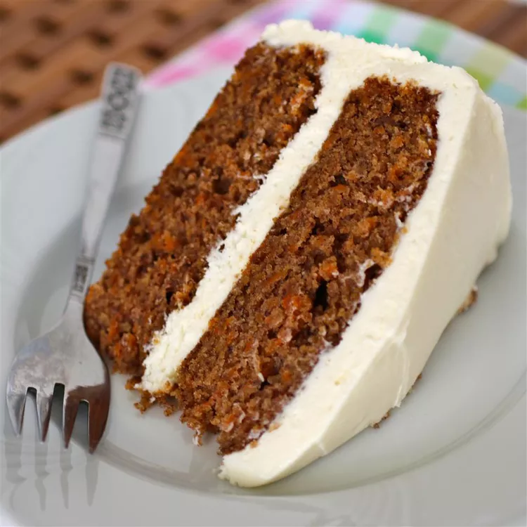

Cream Cheese Frosting

Description
This is the best cream cheese frosting. It's deliciously smooth and great to use on all of your favorite baked
goods — like pumpkin bread, carrot cake, or chocolate cake. It's even perfect on top of sugar cookies or
sandwiched between red velvet cookies!
Ingredients
- 2 (8 ounce) packages cream cheese, softened
- ½ cup unsalted butter, softened
- 1 teaspoon vanilla extract
- 2 cups sifted confectioners' sugar
Steps
- Beat cream cheese and softened butter in a medium bowl until smooth and creamy. Mix in vanilla.
- Gradually add sugar, beating after each addition until incorporated. Continue to beat until frosting is very
smooth.
- Store in the refrigerator after use.